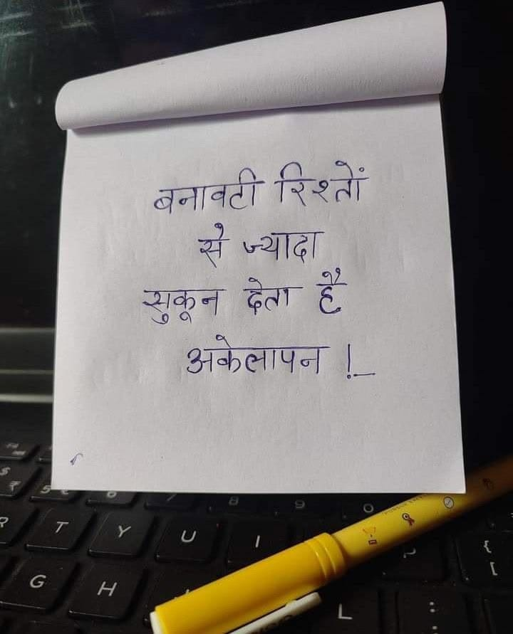

File: hin_sample_13.jpg

बनावटी रिश्ते से भाई सुकून देना हैं अकेलापन !
बनावटी रिश्तों से ज्यादा सुकून देता है अकेलापन ! _
बनावटी रिश्तों से ज्यादा सुकून देता है अकेलापन !—
| ice aN बनाव्टी रिश्ता a ज्यादा spa हैल्ला =n शकून Gat & अकेला रबी
20 arena ८८८. ६ ee नहा 5" डा का a eet TN 2 पट की यो. गए, रा मिट. | Seco thee - eee ay pee OTe: 7 रह 8 ्ििड गा 57 पु . ee a शिष्य pa Pe nea | i oe ऑल ंइ ४ 5 का ES 7 |, iran es ema 75 soe ed Ua ak gg OB, Ha eee I, पर आओ प माँ bau cay anediged hei b ty eae co ets SPRL RRS RMA TRIES Te 205० शी a * » ey toe me s Melt जा hee LHS elas a a टू पर (ae 2 ५2० 2 ee जम शक | MoE ee ee ye) FAS i tes bee Uh te 22407 = SS eee ४५ as | Papen ५ 2 Saget teted ; ST | . Pou eee 0 :. rn : _ ii mo, 2 ee ~ vo nro mee Tra ji’ te aE हित oa - न garden PACT BIN ENT | ENN or : पे :, । Soa ie reer ० gayle oh o a is Mee Soy Un ae a Sarre ra) ie iT 4 हुए दि ys ye i ५७. EARNS os cosy by eo) BEI at De al Gace 45 | PO हि ’ Lah eer} S oak लि पीजी Gy : oan’ + ४४: es पा ्िट : Weep हू 7. #े ४ ) जज | कप आर बा Ee री न ay पु पा व कल कक ५४0 हाय होती: ga, 4 a peat fay a a y 2 आदी पा ne ea ॥ : Pet Se alr Seas 3 =) “hs a तक 0 es a A) ee eee ere? TG PUPS eee 0 pe / 7 ४ ae CAN iT OSE de dS on . Sf Bohs 49089 Pome tur aoe! ' Es ae Bo. cd ee A eh De Pete Cg ८6: ४४२८ ७ eta तह Ae We eS a ge rear 6 0 AUS es y ५.5 , ४5००६ 225 2 tre, 70 7३ 27740 boy co cope ea are’ yi cory, नी, = ele Nine जग GE का ‘ RY ao, heey Oats No AR a Ped t REET x, PP ee a oof SIDE eGi OM. IGE s a wf EE ROOMS SIN ei HA nee RMP \ ! BT TSR की लि दा aan | nosy eeaae : oR get आग ne a है वा] op ep 5 vi a Po est et OS ENA I 4 Poeun. > if हैं Poe nF Bee cae न 8] eal Nk | yee Be Pret ont, cen Pane Sl Sie AM eID oped users oe ae ab मत eee | “= SoA eT ee Tee aN Ae Me ES Ga apo wf ara eS IN, है Mo ee सा He |प pa 339 TEES Oa eee abe DEE Fe oS pe : SP Be tay nA ee ae हैं Pa SO URE OAR आम Sg FOE tet a | el पक, NPIS Se eda Obi te Pe 0, a Lobb sae : जमा एस 5 ताप ताक हां 2 cs 7. vo Le ese Pod SS nde ae. on ree ला ye tly ८ ee lo, Sey EU a ee : तल विन GB I का: गे We आए ase oh Po ही आय व | 0 S| 2773, Bes ee tar SU ae 2 te es ee ee आपका; Ce PSY TA pee छा ey ee Ee ge EE ode i AOE Soy Mes 5 tae CBee हे Be | es 2: Snes oat: £ Sy RP oe Be ते पा a eT LS ws 7 पान हर Tad LF ys wy ES (७) ए किक rea Dati cea ped ee aT nue) iene od ( ’ f -_ a eee: oct ene eae Pa a fa” qe fect ag OM RE Pa bn ae हर पी अल eal pt 4 a a SR Bee ee V oh cat) 4 a Gee cg hou yy Be oe Bee fy Wa ee =h q oe iG peas POR RB oy ne on \ (४ हि s7-., Be SF =u ६९२०2 दि py oft } yen ee SL TP Edo SS 7 AB 7 Pe a a अर ‘ woe Re AS * ae ie oy 7722० SOON: - हा x ९. ५ ०८ ः प्लस ee, fee a ree ate Pane en we i ne MRR PE RO ee em e : rs रे aren
रिशें बनावटी स ज्थादा देता है सूकून T #
❌ OCR Failed
१४
बनावटीरिरतें सज्याद् १ शूकूज दिता हे हेवै जो अवनापत ह
बनावटी रिश्तों ऋ ज्यादा देता हेँ शुकून अकेलापन कलापन।